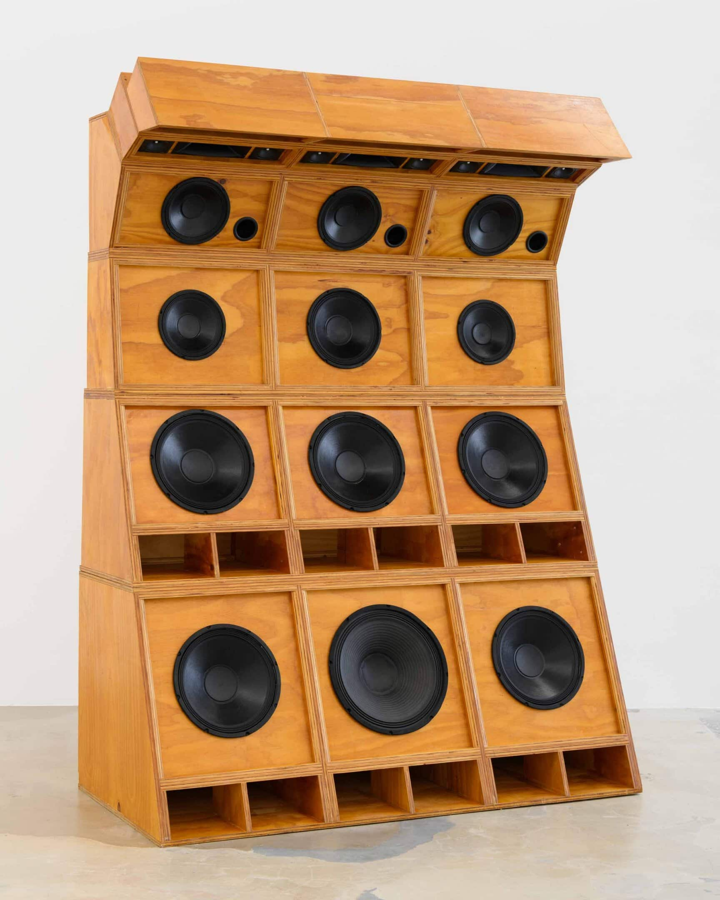
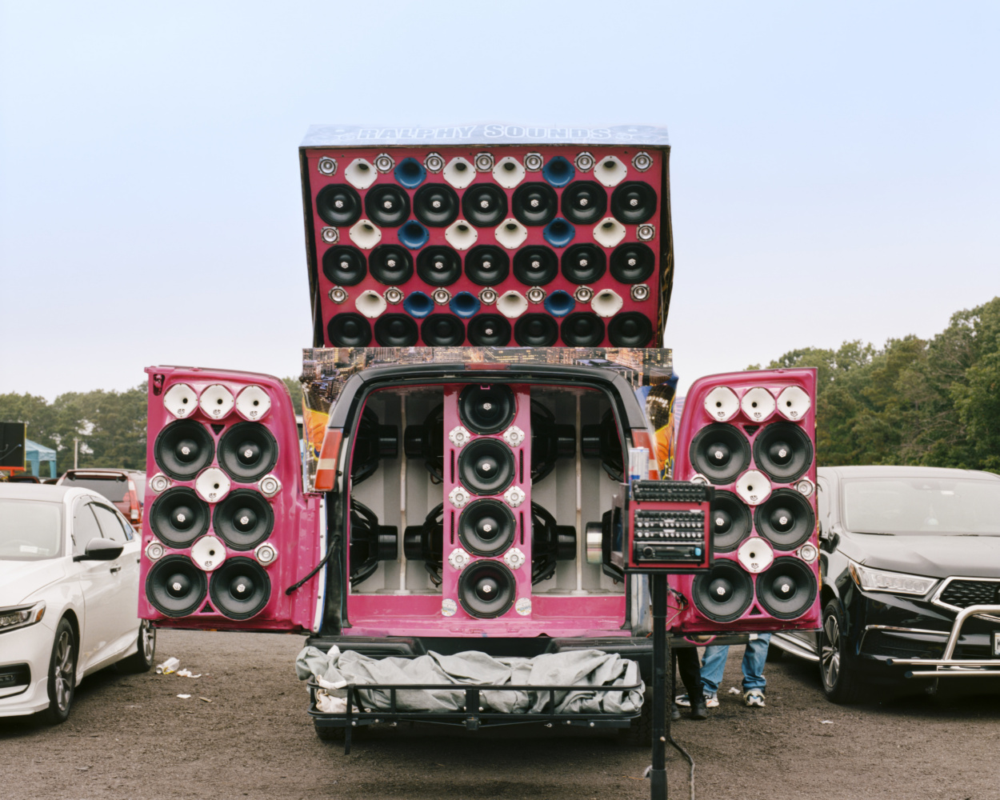

Nights where the humidity is oppressive, making breathing feel laborious, swampy, and palpable. Bodies grouped together, bumping and grinding into the night: from the beach, to the park, to auntie’s house and the suburban backyard, out on the street, along the coastline. In adulthood, I have realized how much my community was raised on Afro-Caribbean music, how we were informed by moments of movement and scenes of joyously lascivious music. Dancing the Revolution: From Dancehall to Reggaeton, MCA Chicago’s recent exhibition curated by Carla Acevedo-Yates, features the work of forty artists from the Caribbean and its diaspora. Capturing moments of joy, the exhibition demonstrates how entire musical communities survive, in spite of the respectability politics and postcolonial institutions that threaten to erase or suppress them.
Several works in the exhibition employ lens-based and archival practices, created from within communities rather than an extractivist anthropological or culture-vulture vantage point. Sowah (2025), a silent video work by Jack Sowah at the exhibition’s entrance, features men dancing in familiar dancehall garb: bright, tightly-fitted short sleeve shirts. Presented on a large frame dotted with small LED lights, the film introduces the documentary vibrancy viewers can expect to see throughout the exhibition, as one might see in recordings at dancehall and reggaeton events across the Caribbean. These genres, and their associated artists, have been misunderstood throughout decades, and for many, secrecy meant survival.[1] As a result of continued police violence and conservative censorship, outside surveillance is now received with intense volatility, so autoethnographic documentation is the only safe option for both viewer and subject.[2]

The exhibition also highlights the communal mobility of gatherings in the Caribbean. Jamaican American artist Cosmo Whyte offers Sole Imperial (For Patrick Johnson) (2019-2025), a mobile speaker system shaped like a crushing wave. On one of the back walls, a series of photographs titled Dominican Soundsystems (2021) by Josefina Santos depicts rigged cars with stacked homemade boomboxes. The Honda Accord in one image sports a license plate reading “QDULCE” (EN: “How Sweet”), a nod to the brash playfulness in these Dominican party essentials. Before the likes of J Balvin or Sean Paul made these genres global sensations, working-class people and artists like Cutty Ranks, Sister Nancy, Nando Boom, and Ivy Queen brought dancehall and reggaeton to life. A venue is not a given or even an essential, the whole neighborhood becomes the party venue: the rhythm is lived en plein air.
In further defiance of respectability politics and conservative censorship, Puerto Rican artist Awilda Rodriguez Lora’s video work Tortillera (2019) offers queer representation and provocation. The iconic dembow beat known to any reggaeton fan commences, with La Performera, Rodriguez Lora’s alias, rapping about how it feels to pleasure herself; her naked form, bathed in purple light, cuts in and out of the screen. The chorus of “tortita tortita de manteca, tortita tortillera!” references the slur used toward lesbians, equating vaginas to tortillas. Tortillera’s visuals call back to underground reggaeton club scenes, with its blurry movement and saturated colors, and its vulgarity front and center. These forms of expression, found often in these genres, defy Caribbean postcolonial legacies of Christianity throughout the region. That said, the genres remain extremely heteronormative, mirroring the systems many Caribbean communities struggle under. Even a false suspicion of queerness could harm an artist’s career.3 La Performera’s work stands in solidarity with artists like Arca or Young Miko, who are working to renegotiate reggaeton’s relationship with the LGBTQ community.

Radamés “Juni” Figueroa’s immersive installation Karaoke el Nuevo Horizonte (2026) feels like the quintessential Caribbean bashment, complete with the disco ball, and white plastic chairs commonly found in construction supply stores and many Caribbean households. Edra Soto wrapped her BB Chairs (2025) in textile prints of Bad Bunny from over the years, and included a jukebox with several reggaeton classics set up at the end for viewers to peruse. A wooden stage built out in the center of the room features speakers and a mic, inviting participants to sing along. One can often find children sleeping late at night in these very scenes, on this very same style of chair, whilst their parents dance the night away, making space for freedom of expression in similarly multicolored bars and makeshift stages.
There are several elements within the genres—the sex, the grassroots origins, and the counterculture sensibilities—that could either be minimised or exotified for the sake of consumption within intellectual spaces. Dancing the Revolution: From Dancehall to Reggaeton strikes an appropriate balance of highlighting what makes these genres unique, in a heartfelt and honest fashion. Critically, its curation does not hide from the lived politics of Caribbean music and the communities that made them.
Dancing the Revolution: From Dancehall to Reggaeton is on view at the Museum of Contemporary Art Chicago, closing September 20th, 2026.
-
Andrew R. Chow, “The Podcast Loud Explores Reggaeton’s Political Roots,” Time, February 24, 2026, https://time.com/6104431/loud-spotify-podcast-reggaeton-history/.
-
The Associated Press, “3 Mainland US Tourists Stabbed in Puerto Rico Neighborhood,” https://www.wlox.com, February 6, 2023, https://www.wlox.com/2023/02/06/3-us-tourists-stabbed-popular-puerto-rican-neighborhood/.
-
Mark Savage, “Ozuna Blackmailed over ‘Intimate Tape,’” BBC News, January 24, 2019, https://www.bbc.com/news/entertainment-arts-46985276.